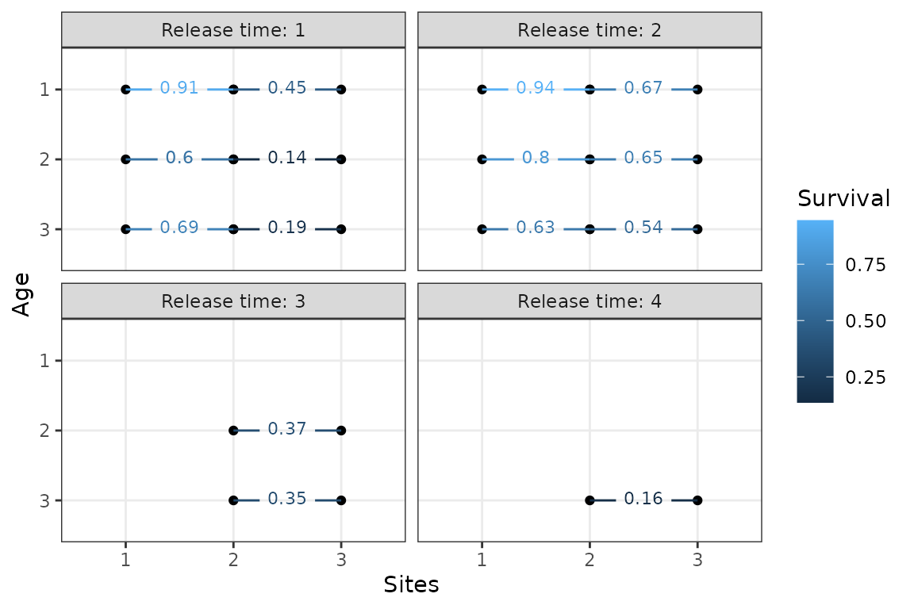
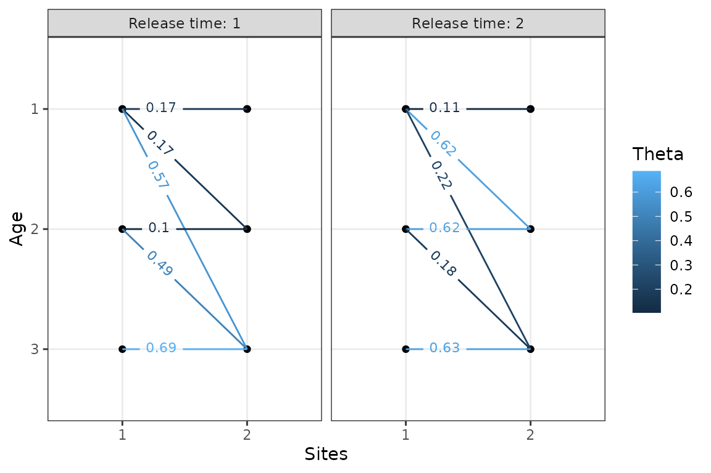

Introduction to fitting age-specific space-for-time mark-recapture models
Source:vignettes/introduction.Rmd
introduction.Rmd1. Introduction
The space4time package is used to fit an age-specific
space-for-time mark-recapture model. This vignette provides the basic
details on formatting data for the models and fitting the models. Load
the space4time package by running
To briefly describe the purpose of these models and when then would be useful, space-for-time substitutions are frequently used in mark-recapture models for animals that migrate along a fixed path. Instead of repeated observations over time, there are observations of individuals as they pass fixed stations or sites. This is not a perfect substitution, because the amount of time it takes individuals to move between sites can vary. This model incorporates time and individual ageclass into the space-for-time framework. Here, ageclasses are with respect to time, so they are ages rather than stages like “juvenile” or “adult”.
The development of this model was motivated by migrating juvenile steelhead, which can be tagged as they exit rearing habitat. They can wait up to a few years before migrating out to the ocean, passing by observation stations (i.e. antennae that detect individuals with passive integrated transponder tags). Their survival and movement depends on age, so we made this model age-specific. However, ages are only measured for a subset of individuals, so we use a sub-model for age and then incorporate the uncertainty in age assignment into the mark-recapture likelihood.
The mark-recapture likelihood is the product of the likelihood of the
observed data, where the probability that an individual transitions from
site j to site k given that it passed site
j at time s and during age a1 is
.
The probability that this individual is observed at site k
is
.
The mark-recapture likelihood incorporates the probability age
assignments
()
for each individual
,
where the mark-recapture probabilities are weighted over the probability
age assignments
(i.e. ).
A full description of the likelihood and model implementation is given
in (forthcoming manuscript).
There are two additional indices for the and arrays: initial release group and group . The initial release group is where individuals were first captured (or observed). The group allows for individual covariates to be included. The implementation here uses formulas for the and parameters [add link to covariate vignette]. The formula for detection probability is:
where is a design matrix of data and are parameters.
The formula for
uses intermediary parameters for conditional transition rates
(),
which are the probability that an individual transitions from site
j to k during time t given that
it did not transition from site j to k in the
previous time period. This accounts for individuals that holdover
between sites for a time period or more.
where is a design matrix of data and are parameters.
2. Data
To demonstrate the format that data need to be in to be read, data is simulated using a built-in function
set.seed(1)
sim.dat <- sim_simple_s4t_ch(N = 800)
s4t_ch <- sim.dat$s4t_chThis returns a capture history object (s4t_ch). The key
pieces of data of interest are the capture history, individual auxiliary
data, and site configuration.
a. The capture history data:
Each row represents an observation or capture instance. There must be four columns, described in the table below.
Required columns:
| Column | Description |
|---|---|
| id | Uniquely identifier |
| site | Observed site name |
| time | Observation time period. Integer or date (converted to year) |
| removed | Whether individuals were removed at this point |
Example first 6 rows:
| id | site | time | removed |
|---|---|---|---|
| 1 | 1 | 2 | FALSE |
| 1 | 2 | 3 | FALSE |
| 2 | 1 | 1 | FALSE |
| 2 | 2 | 1 | FALSE |
| 3 | 1 | 1 | FALSE |
| 3 | 2 | 2 | FALSE |
b. Individual auxiliary data
There must be example one row for each individual. There are three required columns and any extra columns can be included. Order of columns does not matter.
Required columns:
| Column | Description |
|---|---|
| id | Uniquely identifying code or number |
| obs_time | Observed time period when auxiliary data were collected |
| ageclass | Integer ageclass |
Example first 6 rows:
| id | obs_time | FL | ageclass |
|---|---|---|---|
| 1 | 2 | -2.8 | NA |
| 2 | 1 | -1.5 | 2 |
| 3 | 1 | 0.9 | NA |
| 4 | 1 | 4.9 | 3 |
| 5 | 2 | -3.6 | 1 |
| 6 | 1 | 4.8 | 3 |
c. Site configuration
The site configuration is an object nested within the
s4t_ch object. A summary of the site configuration
(s4t_config object) can be shown by printing the
object:
#> Site and age transition configuration object
#>
#> There are N = 3 with N = 1 sites with holdovers
#>
#> Sites: 1, 2, 3
#>
#> Sites with holdovers: 1
#>
#> Site -> site:
#> 1 -> 2
#> 2 -> 3
#> 3 ->
#>
#> Age range per site:
#> 1: 1-3
#> 2: 1-3
#> 3: 1-3There are three sites, where one of the sites has holdovers, meaning
that individuals can wait a time period or more between sites. The sites
are named 1, 2, and 3. The site
with holdovers is site 1, meaning that after individuals
pass site 1, they can wait a time period or more before
transitioning to the next site (site 2). The order and
arrangement of the sites is shown by Site -> site, and
the possible age ranges that individuals can be in each site are shown
by Age range per site.
This object was generated using the following:
ex_config <- linear_s4t_config(sites_names = 1:3, # vector of site names
holdover_sites = 1,# which site (or sites) do
# individuals holdover before continuing to the next site
min_a = c(1,1,1), # for each site, the minimum possible age
max_a = c(3,3,3)) # for each site, the maximum possible ageThe linear_s4t_config() function is used to create these
s4t_config objects. For more complex site configurations,
simplebranch_s4t_config() or s4t_config() can
be used.
d. Creating the s4t_ch object
The s4t_ch object can be created using the elements from
above:
ex_ch <- s4t_ch(ch_df = ch_df,
aux_age_df = aux_df,
s4t_config = ex_config)4. Fit ageclass model
Prior to fitting the full model, the sub-model for ageclass can be
fit separately to select the best fitting model for ageclass. The
fit_ageclass function uses ordinal regression with the
observed age-class of individuals as a response. Covariates (which must
be included in the individual auxiliary data when creating the
s4t_ch object) can be included, using standard formula
notation. We use the logit link and transitions between age groups are
sequential. The threshold between each age group was estimated as
parameters of the model.
age_m1 <- fit_ageclass(age_formula = ~ 1,s4t_ch = s4t_ch)
age_m2 <- fit_ageclass(age_formula = ~ FL,s4t_ch = s4t_ch)
# note that obs_time is treated as a factor (see fit_ageclass documentation)
age_m3 <- fit_ageclass(age_formula = ~ FL + obs_time,s4t_ch = s4t_ch)The models can be compared using AIC:
AIC(age_m1,
age_m2,
age_m3)
#> df AIC
#> age_m1 2 471.4208
#> age_m2 3 229.0453
#> age_m3 4 229.6865The top model by AIC is age_m2.
5. Fit space-for-time mark-recapture model
There are two options for fitting space-for-time mark-recapture
models, implementations using Bayesian (fit_s4t_cjs_rstan)
and maximum likelihood (fit_s4t_cjs_ml) methods. As of now,
the Bayesian implementation is faster.
For the purposes of this example, the number of chains is set to 2 (recommend 3), the number of warmup iteration is 200 (recommend at least 500), and the number of total iterations is 600 (recommend at least 500 over the number of warmups).
The first three arguments are the formulas for detection probability
(p), conditional transition rates (theta), and
ageclass. The formulas allow for symbolic representation of the
sub-models.
The formula for p below is ~ t, which
represents detection probability varying by the time individuals pass
sites. There is only one site (site 2) where detection probability is
estimated, because detection is not estimated at the first site or last
site (fixed to 1 at the last site because it is not separable from
transition rates). If there were multiple sites where detection
probability was estimated, the equivalent formula would be
~ t * k, which represents a different detection probability
at each site at each time period. A table showing the meaning of each
variable (j, k, s,
t, r, g, a1, and
a2) is shown below.
The formula for theta below is
~ a1 * a2 * s * j, which is the fully saturated model for
this scenario with different transition probabilities for each
combination of age, time, and site. The transition probabilities for
individuals from site j to site k are
conditioned on individuals not transitioning to site k in
the previous time period. This is the fully saturated model for
theta because there are no groups and because there is only
one initial release site (site 1). If there were more than one initial
release site, the full saturated model would be
~ a1 * a2 * s * j * r.
The argument fixed_age == TRUE allows for the ageclass
model to be fit separately and the output fed into the mark-recapture
model. The output is the estimated probabilities that individuals belong
to each ageclass. The mark-recapture model uses the probability age
assignments to integrate over the uncertainty in age.
| Variable | Description |
|---|---|
| j | Release site |
| k | Recapture site |
| s | Release time |
| t | Recapture time |
| r | Initial release group |
| g | Group (individual covariate) |
| a1 | Age during time s (“release”) |
| a2 | Age during time t (“recapture”) |
m1 <- fit_s4t_cjs_rstan(
p_formula = ~ t,
theta_formula = ~ a1 * a2 * s * j,
ageclass_formula = ~ FL,
fixed_age = TRUE,
s4t_ch = s4t_ch,
chains = 2,
warmup = 200,
iter = 600
)
#>
#> SAMPLING FOR MODEL 's4t_cjs_fixedage_draft7' NOW (CHAIN 1).
#> Chain 1:
#> Chain 1: Gradient evaluation took 0.000861 seconds
#> Chain 1: 1000 transitions using 10 leapfrog steps per transition would take 8.61 seconds.
#> Chain 1: Adjust your expectations accordingly!
#> Chain 1:
#> Chain 1:
#> Chain 1: Iteration: 1 / 600 [ 0%] (Warmup)
#> Chain 1: Iteration: 60 / 600 [ 10%] (Warmup)
#> Chain 1: Iteration: 120 / 600 [ 20%] (Warmup)
#> Chain 1: Iteration: 180 / 600 [ 30%] (Warmup)
#> Chain 1: Iteration: 201 / 600 [ 33%] (Sampling)
#> Chain 1: Iteration: 260 / 600 [ 43%] (Sampling)
#> Chain 1: Iteration: 320 / 600 [ 53%] (Sampling)
#> Chain 1: Iteration: 380 / 600 [ 63%] (Sampling)
#> Chain 1: Iteration: 440 / 600 [ 73%] (Sampling)
#> Chain 1: Iteration: 500 / 600 [ 83%] (Sampling)
#> Chain 1: Iteration: 560 / 600 [ 93%] (Sampling)
#> Chain 1: Iteration: 600 / 600 [100%] (Sampling)
#> Chain 1:
#> Chain 1: Elapsed Time: 16.104 seconds (Warm-up)
#> Chain 1: 29.058 seconds (Sampling)
#> Chain 1: 45.162 seconds (Total)
#> Chain 1:
#>
#> SAMPLING FOR MODEL 's4t_cjs_fixedage_draft7' NOW (CHAIN 2).
#> Chain 2:
#> Chain 2: Gradient evaluation took 0.00074 seconds
#> Chain 2: 1000 transitions using 10 leapfrog steps per transition would take 7.4 seconds.
#> Chain 2: Adjust your expectations accordingly!
#> Chain 2:
#> Chain 2:
#> Chain 2: Iteration: 1 / 600 [ 0%] (Warmup)
#> Chain 2: Iteration: 60 / 600 [ 10%] (Warmup)
#> Chain 2: Iteration: 120 / 600 [ 20%] (Warmup)
#> Chain 2: Iteration: 180 / 600 [ 30%] (Warmup)
#> Chain 2: Iteration: 201 / 600 [ 33%] (Sampling)
#> Chain 2: Iteration: 260 / 600 [ 43%] (Sampling)
#> Chain 2: Iteration: 320 / 600 [ 53%] (Sampling)
#> Chain 2: Iteration: 380 / 600 [ 63%] (Sampling)
#> Chain 2: Iteration: 440 / 600 [ 73%] (Sampling)
#> Chain 2: Iteration: 500 / 600 [ 83%] (Sampling)
#> Chain 2: Iteration: 560 / 600 [ 93%] (Sampling)
#> Chain 2: Iteration: 600 / 600 [100%] (Sampling)
#> Chain 2:
#> Chain 2: Elapsed Time: 18.462 seconds (Warm-up)
#> Chain 2: 28.985 seconds (Sampling)
#> Chain 2: 47.447 seconds (Total)
#> Chain 2:The results can be printed out. Check that the Rhat values are all below 1.1 (for proper convergence/mixing)
print(m1)
#> Inference for Stan model: s4t_cjs_fixedage_draft7.
#> 2 chains, each with iter=600; warmup=200; thin=1;
#> post-warmup draws per chain=400, total post-warmup draws=800.
#>
#> mean se_mean sd 2.5% 25% 50% 75% 97.5% n_eff Rhat
#> theta_(Intercept) -1.60 0.01 0.25 -2.14 -1.76 -1.59 -1.43 -1.14 571 1.00
#> theta_a12 -1.75 0.02 0.54 -2.94 -2.08 -1.72 -1.35 -0.80 611 1.00
#> theta_a13 -1.15 0.02 0.54 -2.34 -1.46 -1.14 -0.78 -0.17 603 1.00
#> theta_a22 0.18 0.02 0.38 -0.53 -0.06 0.18 0.42 0.91 589 1.00
#> theta_a23 3.54 0.02 0.54 2.65 3.16 3.48 3.87 4.76 601 1.01
#> theta_s2 -0.58 0.02 0.41 -1.38 -0.82 -0.58 -0.32 0.18 550 1.00
#> theta_s3 0.87 0.01 0.36 0.11 0.63 0.86 1.10 1.54 1015 1.00
#> theta_s4 -0.21 0.02 0.58 -1.34 -0.60 -0.20 0.18 0.90 931 1.00
#> theta_j2 1.40 0.02 0.49 0.40 1.08 1.40 1.74 2.30 624 1.00
#> theta_a12:a22 0.96 0.03 0.64 -0.26 0.54 0.96 1.38 2.28 637 1.00
#> theta_a12:s2 0.02 0.05 0.94 -1.93 -0.59 0.11 0.66 1.78 328 1.00
#> theta_a13:s2 0.04 0.05 0.92 -1.86 -0.56 0.15 0.70 1.58 325 1.00
#> theta_a12:s3 0.68 0.04 1.00 -1.11 -0.01 0.57 1.27 2.91 685 1.00
#> theta_a22:s2 2.82 0.02 0.52 1.80 2.47 2.84 3.16 3.87 537 1.00
#> theta_a23:s2 0.28 0.05 0.94 -1.36 -0.37 0.19 0.86 2.45 298 1.00
#> theta_a12:j2 -1.28 0.05 1.05 -3.66 -1.93 -1.22 -0.57 0.57 519 1.00
#> theta_a13:j2 -3.70 0.02 0.61 -4.89 -4.13 -3.69 -3.28 -2.49 635 1.00
#> theta_s2:j2 1.52 0.03 0.73 0.06 1.07 1.53 2.02 2.94 529 1.00
#> theta_a12:a22:s2 0.43 0.05 0.95 -1.26 -0.25 0.39 1.03 2.36 362 1.00
#> theta_a12:s2:j2 -1.49 0.05 1.16 -3.60 -2.33 -1.54 -0.66 0.77 496 1.00
#> theta_a13:s2:j2 0.41 0.04 0.83 -1.25 -0.10 0.40 0.89 2.05 550 1.00
#> p_(Intercept) 2.63 0.04 0.75 1.38 2.09 2.55 3.09 4.37 349 1.00
#> p_t2 -1.49 0.04 0.77 -3.27 -1.95 -1.44 -0.92 -0.23 352 1.00
#> p_t3 -0.57 0.04 0.83 -2.31 -1.04 -0.55 -0.03 0.93 387 1.00
#> p_t4 -0.76 0.06 1.26 -2.99 -1.60 -0.83 -0.05 2.01 476 1.00
#> overall_surv[1] 0.91 0.00 0.04 0.83 0.89 0.92 0.94 0.97 710 1.00
#> overall_surv[2] 0.60 0.00 0.05 0.50 0.56 0.60 0.63 0.70 914 1.00
#> overall_surv[3] 0.69 0.00 0.06 0.58 0.65 0.68 0.72 0.80 829 1.00
#> overall_surv[4] 0.94 0.00 0.04 0.87 0.92 0.95 0.98 0.99 400 1.00
#> overall_surv[5] 0.80 0.00 0.05 0.71 0.77 0.80 0.83 0.89 747 1.00
#> overall_surv[6] 0.63 0.00 0.05 0.53 0.59 0.63 0.66 0.74 793 1.00
#> overall_surv[7] 0.45 0.00 0.11 0.25 0.38 0.44 0.53 0.67 860 1.00
#> overall_surv[8] 0.14 0.00 0.09 0.01 0.07 0.12 0.18 0.34 865 1.00
#> overall_surv[9] 0.19 0.00 0.04 0.11 0.16 0.18 0.21 0.28 854 1.00
#> overall_surv[10] 0.67 0.00 0.12 0.42 0.59 0.68 0.75 0.86 820 1.00
#> overall_surv[11] 0.65 0.00 0.06 0.54 0.61 0.65 0.69 0.77 888 1.00
#> overall_surv[12] 0.54 0.00 0.05 0.45 0.51 0.54 0.57 0.63 953 1.00
#> overall_surv[13] 0.37 0.00 0.06 0.26 0.33 0.37 0.41 0.48 867 1.00
#> overall_surv[14] 0.35 0.00 0.05 0.26 0.31 0.34 0.38 0.44 978 1.00
#> overall_surv[15] 0.16 0.00 0.07 0.06 0.12 0.15 0.20 0.31 917 1.00
#> cohort_surv[1] 0.17 0.00 0.03 0.10 0.15 0.17 0.19 0.24 571 1.00
#> cohort_surv[2] 0.17 0.00 0.04 0.10 0.14 0.16 0.19 0.25 767 1.00
#> cohort_surv[3] 0.57 0.00 0.05 0.49 0.54 0.57 0.61 0.67 777 1.01
#> cohort_surv[4] 0.10 0.00 0.03 0.05 0.08 0.10 0.12 0.17 959 1.00
#> cohort_surv[5] 0.49 0.00 0.05 0.40 0.46 0.49 0.53 0.59 861 1.00
#> cohort_surv[6] 0.69 0.00 0.06 0.58 0.65 0.68 0.72 0.80 829 1.00
#> cohort_surv[7] 0.11 0.00 0.03 0.05 0.08 0.10 0.13 0.17 893 1.00
#> cohort_surv[8] 0.62 0.00 0.05 0.52 0.59 0.62 0.65 0.72 949 1.00
#> cohort_surv[9] 0.22 0.00 0.04 0.15 0.19 0.22 0.24 0.31 728 1.00
#> cohort_surv[10] 0.62 0.00 0.05 0.51 0.58 0.62 0.65 0.72 881 1.00
#> cohort_surv[11] 0.18 0.00 0.04 0.12 0.16 0.18 0.21 0.26 885 1.01
#> cohort_surv[12] 0.63 0.00 0.05 0.53 0.59 0.63 0.66 0.74 793 1.00
#> cohort_surv[13] 0.45 0.00 0.11 0.25 0.38 0.44 0.53 0.67 860 1.00
#> cohort_surv[14] 0.14 0.00 0.09 0.01 0.07 0.12 0.18 0.34 865 1.00
#> cohort_surv[15] 0.19 0.00 0.04 0.11 0.16 0.18 0.21 0.28 854 1.00
#> cohort_surv[16] 0.67 0.00 0.12 0.42 0.59 0.68 0.75 0.86 820 1.00
#> cohort_surv[17] 0.65 0.00 0.06 0.54 0.61 0.65 0.69 0.77 888 1.00
#> cohort_surv[18] 0.54 0.00 0.05 0.45 0.51 0.54 0.57 0.63 953 1.00
#> cohort_surv[19] 0.37 0.00 0.06 0.26 0.33 0.37 0.41 0.48 867 1.00
#> cohort_surv[20] 0.35 0.00 0.05 0.26 0.31 0.34 0.38 0.44 978 1.00
#> cohort_surv[21] 0.16 0.00 0.07 0.06 0.12 0.15 0.20 0.31 917 1.00
#>
#> Samples were drawn using NUTS(diag_e) at Sat Jan 24 01:34:55 2026.
#> For each parameter, n_eff is a crude measure of effective sample size,
#> and Rhat is the potential scale reduction factor on split chains (at
#> convergence, Rhat=1).Evaluate traceplots of each estimated parameter:
traceplot(m1,pars = "theta")
traceplot(m1,pars = "^p") # regular expressions for all parameters that start with "p"
plotSurvival(m1)
plotTransitions(m1,textsize = 3, j == 1) # only include transitions that start from site 1